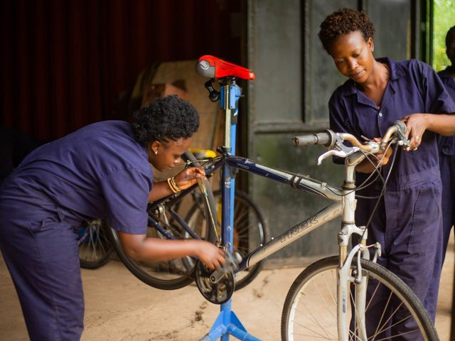

VOCABULARY · LALA WORD UNIT 8
One Young Mind, Big Impact．一字多義（八）
catch 是接住，也是「趕上公車」「染上感冒」；break 是弄壞，也是「休息一下」。這個單元有 6 個主題單字、18 個更多單字，再整理 before／ago、after／later、work／job／career、problem／question，和字尾 -ist（artist、dentist、scientist）。
共 27 個單字．點 🔊 聽發音

1countryn.
國家；鄉下
複數 countries
- 1n.國家Japan is a beautiful country.日本是一個美麗的國家。
- 2n.鄉下 in the country 在鄉下My grandparents live in the country.我的祖父母住在鄉下。

2deliverv.
發表（演說）；傳達；遞送；履行（承諾）；接生
deliver - delivered - delivered - delivering
- 1v.發表（演說）；傳達 deliver a speech 發表演說The principal delivered a speech at the meeting.校長在大會上發表演說。
- 2v.遞送Do you deliver food to this area?你們有外送到這一區嗎？
- 3v.履行（承諾）He promised to help, and he delivered.他答應要幫忙，也真的做到了。
- 4v.接生The doctor delivered the baby at 3 a.m.醫生在凌晨三點接生了寶寶。

3dreamn. / adj. / v.
夢；夢想；夢想中的；理想的；做夢；夢想
dream - dreamed（dreamt） - dreamed（dreamt） - dreaming
- 1n.夢；夢想 a dream come true 夢想成真I had a strange dream last night.我昨晚做了一個奇怪的夢。
- 2adj.夢想中的；理想的This is my dream house.這是我夢想中的房子。
- 3v.做夢；夢想 dream of / about 夢想；夢到She dreams of becoming a singer.她夢想成為歌手。

4fixv.
修理；整理；解決；安排；確定；固定；盯著
fix - fixed - fixed - fixing
- 1v.修理；整理；解決 fix up 修理；fix a problem 解決問題Dad fixed my bike.爸爸修好了我的腳踏車。
- 2v.安排；確定 fix a date 訂日期Let's fix a date for the party.我們來訂派對的日期吧。
- 3v.固定；盯著 fix one's eyes on 盯著Fix the poster on the wall with tape.用膠帶把海報固定在牆上。

5catchv.
偵測到；聽清楚；抓住；接住；趕上（交通工具）；染上（疾病）；吸引（目光）；著（火）
catch - caught - caught - catching
- 1v.偵測到；聽清楚Sorry, I didn't catch your name.抱歉，我沒聽清楚你的名字。
- 2v.抓住；接住Catch the ball!接住球！
- 3v.趕上（交通工具）I ran to catch the bus.我跑去趕公車。
- 4v.染上（疾病） catch a cold 感冒I caught a cold last week.我上星期感冒了。
- 5v.吸引（目光） catch one's eye 吸引某人的目光The red dress caught my eye.那件紅洋裝吸引了我的目光。
- 6v.著（火） catch fire 著火The old house caught fire.那棟老房子著火了。
6savev.
救；節省；存（錢）；保留
save - saved - saved - saving
- 1v.救The lifeguard saved the boy.救生員救了那個男孩。
- 2v.節省Taking the MRT saves time.搭捷運省時間。
- 3v.存（錢）；保留 save up for 為…存錢；save a seat 保留位子I'm saving money for a new bike.我在存錢買新腳踏車。

7actv. / n.
行動；表現得；扮演；行為
act - acted - acted - acting
- 1v.行動；表現得 act as if 表現得好像We must act fast.我們必須趕快行動。
- 2v.扮演She acted as Snow White in the play.她在戲裡演白雪公主。
- 3n.行為Helping others is a kind act.幫助別人是善良的行為。

8breakv. / n.
打破；弄壞；打破（紀錄）；分開；違反；休息；裂痕；骨折
break - broke - broken - breaking
- 1v.打破；弄壞Who broke the window?誰打破了窗戶？
- 2v.打破（紀錄）；分開 break the record 破紀錄；break up 分手He broke the school record.他打破了學校的紀錄。
- 3v.違反 break one's word 不守承諾Don't break the rules.不要違反規定。
- 4n.休息 take a break 休息一下Let's take a ten-minute break.我們休息十分鐘吧。
- 5n.裂痕；骨折The X-ray shows a break in his arm.X 光顯示他的手臂骨折。
9channeln.
頻道；管道；途徑；海峽
複數 channels
- 1n.頻道Let's change the channel.我們轉台吧。
- 2n.管道；途徑The internet is a good channel for learning.網路是學習的好管道。
- 3n.海峽The ship sailed through the channel.船駛過海峽。

10closev. / adj.
關上；打烊；關門；靠近的；親近的
close - closed - closed - closing；close - closer - closest
- 1v.關上Please close the window.請關窗。
- 2v.打烊；關門The shop closes at nine.這家店九點打烊。
- 3adj.靠近的；親近的 be close to 靠近；親近（形容詞唸 [klos]）My house is close to the school.我家離學校很近。

11drivev. / n.
開車；載；迫使；車程；兜風；幹勁；決心
drive - drove - driven - driving
- 1v.開車；載Mom drives me to school every day.媽媽每天開車載我上學。
- 2v.迫使 drive + 人 + crazy 把人逼瘋The noise is driving me crazy.那噪音快把我逼瘋了。
- 3n.車程；兜風 go for a drive 去兜風It's a two-hour drive to Taichung.到臺中要開兩小時的車。
- 4n.幹勁；決心She has the drive to win.她有贏的決心。
12dryadj. / v.
乾的；乾燥的；弄乾；變乾
dry - drier - driest；dry - dried - dried - drying
- 1adj.乾的；乾燥的 the dry season 乾季My clothes are dry now.我的衣服乾了。
- 2v.弄乾；變乾Dry your hair before you go to bed.睡覺前把頭髮吹乾。

13floorn.
地板；樓層
複數 floors
- 1n.地板The floor is wet. Be careful.地板濕濕的，小心。
- 2n.樓層 on the + 序數 + floor 在第…樓Our classroom is on the third floor.我們的教室在三樓。

14graden. / v.
年級；等級；品質；成績；分數；評分
grade - graded - graded - grading
- 1n.年級My sister is in fifth grade.我妹妹讀五年級。
- 2n.等級；品質This is high-grade tea.這是高級茶葉。
- 3n.成績；分數 get a good / bad grade 得到好／壞成績I got a good grade on the test.我考試得到好成績。
- 4v.評分The teacher is grading our tests.老師正在改我們的考卷。

15growv.
生長；成長；留長（頭髮）；種植；變得
grow - grew - grown - growing
- 1v.生長；成長 grow up 長大Kids grow fast.小孩長得很快。
- 2v.留長（頭髮）I want to grow my hair long.我想把頭髮留長。
- 3v.種植Grandpa grows tomatoes in his garden.爺爺在花園種番茄。
- 4v.變得It grew dark outside.外面天色變暗了。

16halfadj. / n.
一半的；半票；一半
複數 halves
- 1adj.一半的 half an hour 半小時；half a dozen 半打I waited for half an hour.我等了半個小時。
- 2n.半票；一半One adult and two halves, please.一張全票、兩張半票，謝謝。

17keepv.
保持；保留；留著
keep - kept - kept - keeping
- 1v.保持 keep + V-ing 持續做；keep in mind 記住；keep one's word 守信Keep quiet in the library.在圖書館要保持安靜。
- 2v.保留；留著 keep the receipt 保留收據Keep the change.零錢不用找了。

18leavev. / n.
離開；留下；遺忘；讓…保持某狀態；假期；休假
leave - left - left - leaving
- 1v.離開 leave for 前往The train leaves at six.火車六點開。
- 2v.留下；遺忘 leave a message 留言I left my bag on the bus.我把包包忘在公車上。
- 3v.讓…保持某狀態Don't leave the door open.別讓門開著。
- 4n.假期；休假 on leave 休假中；sick leave 病假Ms. Chen is on leave this week.陳老師這星期請假。

19mopv. / n.
拖（地）；擦；拖把
mop - mopped - mopped - mopping
- 1v.拖（地）；擦It's my turn to mop the floor.輪到我拖地了。
- 2n.拖把Where is the mop?拖把在哪裡？
20movev. / n.
移動；搬家；採取行動；繼續前進；使感動；行動；舉動
move - moved - moved - moving
- 1v.移動Don't move! There's a bee on your arm.別動！你手上有一隻蜜蜂。
- 2v.搬家We moved to Taipei last year.我們去年搬到臺北。
- 3v.採取行動；繼續前進 move on 放下；繼續前進It's time to move on.該向前走了。
- 4v.使感動Everyone was moved by her story.每個人都被她的故事感動。
- 5n.行動；舉動It's your move.輪到你走了（下棋）。
21pastn. / adj. / adv. / prep.
過去；過去的；經過；（時間）過了
- 1n.過去 in the past 在過去In the past, people wrote letters.以前人們寫信。
- 2adj.過去的It has been hot for the past few days.過去幾天都很熱。
- 3adv.經過A bus went past.一輛公車開過去了。
- 4prep.（時間）過了It's half past seven.現在七點半。
22petn. / v.
寵物；撫摸
pet - petted - petted - petting
- 1n.寵物 keep a pet 養寵物Do you have any pets?你有養寵物嗎？
- 2v.撫摸You can pet the rabbit gently.你可以輕輕摸兔子。

23quartern.
四分之一；十五分鐘；季度（三個月）
複數 quarters
- 1n.四分之一Cut the cake into quarters.把蛋糕切成四份。
- 2n.十五分鐘 a quarter past / to 過／差十五分It's a quarter past three.現在三點十五分。
- 3n.季度（三個月）Sales went up in the second quarter.第二季的銷售量上升了。

24throughprep. / adv.
穿過；透過；徹底地
- 1prep.穿過 get through 熬過；通過The train went through the tunnel.火車穿過隧道。
- 2prep.透過I found this job through a friend.我透過朋友找到這份工作。
- 3adv.徹底地Read the letter through before you sign it.簽名前把信從頭到尾看完。

25artistn.
藝術家；畫家
art 藝術 + -ist；複數 artists
- 1n.藝術家；畫家Van Gogh was a famous artist.梵谷是有名的藝術家。

26dentistn.
牙醫
dent（牙齒）+ -ist；複數 dentists
- 1n.牙醫 see a dentist 看牙醫I have a toothache. I need to see a dentist.我牙痛，要去看牙醫。

27scientistn.
科學家
science 科學 + -ist；複數 scientists
- 1n.科學家She wants to be a scientist.她想當科學家。
FOCUS
易混淆字：before 和 ago
| 單字 | 用法 | 例句 |
|---|---|---|
| before | 在…之前；也可以單獨用「以前」，常和完成式一起用 | I have seen this movie before.／before lunch |
| ago | 時間 + ago，從現在算回去多久以前，用過去式 | I met him two years ago. |
FOCUS
易混淆字：after 和 later
| 單字 | 用法 | 例句 |
|---|---|---|
| after | 在某件事、某時間之後：after + 名詞／子句 | Let's play after school. |
| later | 「之後；晚一點」，可以單獨用：see you later、three days later | See you later! |
FOCUS
易混淆字：work／job／career
| 單字 | 用法 | 例句 |
|---|---|---|
| work | 工作（不可數）；也當動詞 | I have a lot of work to do. |
| job | 一份工作（可數） | She got a part-time job. |
| career | 長期的職業生涯、事業 | He wants a career in music. |
FOCUS
易混淆字：problem 和 question
| 單字 | 用法 | 例句 |
|---|---|---|
| problem | 需要「解決」的問題、困難 | We need to solve this problem. |
| question | 需要「回答」的問題 | May I ask a question? |
FOCUS
字尾 -ist：從事某領域的人
| 原來的字 | 加 -ist | 意思 |
|---|---|---|
| art 藝術 | artist | 藝術家 |
| dent（拉丁文：牙齒） | dentist | 牙醫 |
| science 科學 | scientist | 科學家 |
| piano 鋼琴 | pianist | 鋼琴家 |